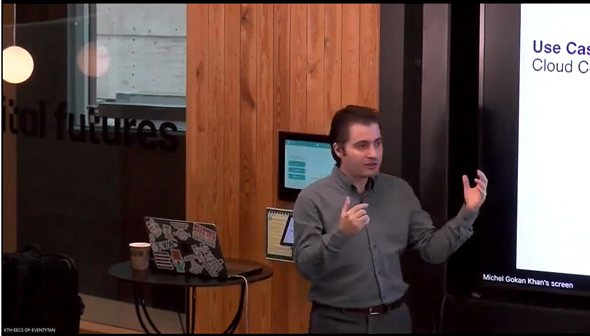

273
Citations

I'm a Stockholm-based computer scientist and entrepreneur, passionate about developing real, groundbreaking technology. My current focus: agentic software engineering.
As CEO and CTPO at Softwarify® AB, currently in stealth mode, I'm building a human-AI collaboration platform where both human and AI engineers build large-scale software together. I'm also the CTO at Co-Cart AB, where I lead the technology behind Condé Nast's VETTE. Previously, I served as CTO at Spotin AB, where I led the technology behind the product that was ultimately acquired by Condé Nast.
I hold a PhD in Computer Science (Machine Learning) from Karlstad University and conducted my postdoctoral research at KTH Royal Institute of Technology in collaboration with AstraZeneca. My research spans digital twinning, 3D Gaussian splatting, computer vision, and ML-driven optimization of cloud-native systems - with open-source tools like PerfCam, PerfSim, NFV-Inspector, and sfc-stress that are used in industry.
I’ve published more than a couple of dozen peer-reviewed scientific articles in top journals and conferences, including IEEE Transactions, with over 260 citations and several awards for my work. I’ve also done a fellowship/internship at Ericsson, focusing on microservice performance and optimization for 5G Core systems, and led teams in roles like Tech Lead and Solution Architect at RM Innovation, where I guided agile transformations and designed cutting-edge B2B2C solutions. I was also the founder of Olam Tech, where we served multiple customers worldwide, building innovative solutions like home automation systems, SaaS/PaaS solutions for online project assessments, and a complete online shopping solution, among many others. Throughout my career, I’ve built, optimized, and led teams through projects that blend research with real-world impact.
Academia and industry, interleaved by design: every research result pushed toward production, every product informed by research.
Leading the technology behind Condé Nast's VETTE platform. Proud that Spotin has been acquired by Condé Nast: what was Spotin will now be used to power VETTE.
An AI-first platform for software development teams - collaborative human-machine agentic development for large-scale microservice systems.
STEALTH MODEML-based optimization: computer vision, 3D reconstruction, digital twinning, and predictive maintenance for Industry 5.0 - the SMART project funded by Digital Futures.
Hands-on CTO: re-architected the entire product into a scalable microservice architecture with modern DevOps.
ACQUIRED BY CONDÉ NASTThesis: Unchaining Microservice Chains: Machine Learning Driven Optimization in Cloud Native Systems. [Thesis] [Defence video]
SPEC AWARD NOMINEEResearched and patented performance modeling and optimization methods for 4G-LTE and 5G Core systems.
PATENT · US 11,962,474MACoMEC - collaborative mobility-aware computation offloading for mobile edge computing (China-Sweden STINT project).
Designed B2B2C solutions and led the organization's agile transformation.
High-performance distributed systems. Thesis: SLA-aware virtual machine CPU scheduling in cloud environments.
Contributed BE/FE development, modules, and support across high-profile Magento retail projects, working remotely with a 125-person team.
Software house serving customers worldwide: home automation, SaaS/PaaS for online project assessment, and complete e-commerce solutions.
Managed and delivered diverse online solutions across industries.
Windows-based fixed-asset management application - the first shipped product.
Applications of mathematical optimization in computer science.
A lifetime of projects, from a RoboCup soccer-simulation team in 2006 to agentic AI platforms in 2026: research tools, open source, startups, acquisitions, robots, and games.
Cloud, edge, and fog performance optimization · digital twinning · computer vision · ML-driven systems. Full list on Google Scholar.
A few excerpts, shared without names or titles. There are more than a dozen public recommendations on my LinkedIn, and another dozen written letters available upon request.
He undertook the development of PerfSim almost single-handedly, demonstrating his technical prowess and dedication to advancing the field of cloud computing. His contributions have advanced the academic discourse and had a tangible impact on industry practices.
An extremely smart, organized, and hard-working individual. His leadership skills, commitment, creativity, and sympathetic character would make him an invaluable asset for any technology-based organization.
By the age of 27 he had ten years of professional working experience in well-respected companies and start-ups, which is completely exceptional among my students. He has proved to have a divergent, scientist thinking style, intelligence, and leadership qualities.
A brilliant mind in designing complex and effective algorithms and high-quality applications. One of the most creative and intelligent students I ever had.
An extremely high level of dedication, intelligence, and self-motivation. He is a high achiever and has done much in his life already: responsible, ethical, and a true idealist.
He was always asking important questions and showed a high dominance in the topic. He is gifted with coping and capable of dealing with highly stressful situations and leading highly complex projects.
He became an integral part of the team, contributing in a very constructive way to the project strategy and solution discussions, proving his technical seniority and bringing his fresh, young mindset.
An exceptionally smart and highly motivated person who is extremely knowledgeable in cloud network architecture, orchestration and automation. His fresh perspective directly contributed to the success of our project, bringing it to the next level.
Michel is full of energy and really loves problem solving. For him, there are no problems, only opportunities. He has tremendous drive and the ability to produce far beyond expectations. He is a true tech wizard.
His strong enterprising spirit, honest approach to problems and a very pleasant collaborative personality. He will be a great asset to any organization or team he works with.
Any team fortunate enough to have him on board is gaining an invaluable asset. Whether he possesses the solution or knows the path to discover it, Michel consistently delivers.

Research collaborations, advisory, speaking, or just a good conversation about digital twins, agentic AI, and cloud-native systems.